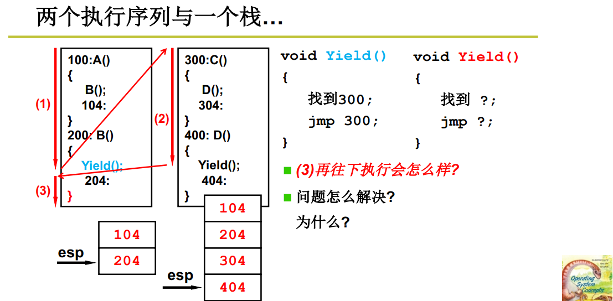

线程切换
进程：指令执行序列+资源。进程的切换除了PC指针（程序计数器，存放下一条指令地址）的变化，映射表（资源）也要发生变化。
线程：一个进程中有多个线程，它们共用该进程中的资源。所以线程的切换不需要对资源进行切换。线程的切换的速度就要比进程的切换要快很多。
先说线程的切换
线程A在切换到线程C的时候需要保存线程A之前运行的结果和之后又要重那里接着运行的地址。
这里我们使用栈来保存

上图是两个线程使用一个栈，其中数字对应着地址。Yeild函数指定切换到那里。在用户态可以自己编写切换程序，但是在内核中只能使用内核的切换算法了。
想一想这样做能成功的从2准确的回到3并正常运行？
当回到(3)处，遇到“}”时要出栈。出栈的第一个地址为404，现在有回到另一个线程。然后执行404后的代码再遇到”}”时有出栈，地址为304。这就切换失败了，但是能切换。
如果每个线程都有自己的栈会不会更好一点。这就出现每个线程都有自己的线程控制块（TCB）。每个栈都与TCB进行关联。当前栈的栈顶地址是存放在CPU里面的esp寄存器里面的， 因此只需要改变esp的值就可以切换栈了
1 | |
现在(3)后遇到“}”后根据栈出了的地址为204。我们想要的是回到104地址了，还是失败了，但是并没有在另一个线程中了。
解决：

就是把Yield中的 jmp 204 地址去到。也就是在Yield中的函数中“}”时就把204地址弹出了，再遇到B()中的”}”时弹出来的就是104地址了。
现在就线程切换的思路了。
目前只是用户态下的切换，并没有涉及到内核态。
问题：用户态线程内核是不知道的，当用户态中的一个线程要去访问磁盘资源，内核不知道，就让该进程继续使用CPU资源，但是它并没有在使用CPU。这就造成了资源的浪费。
用户态一个进程有多个线程，当一个线程阻塞了。内核是看不到用户的线程，则就把进程切换了。导致进程中的线程无法切换了。

多核处理器用的是同一个MMU（Memory Management Unit），这就是多线程模式。则内核级线程技术，能更好的发挥硬件的优势。

用户级线程与内核级线程：
用户级线程在发生中断才能进入到内核级线程
内核级线程是要在内核中执行的程序。则内核级线程需要在用户态和核心态里跑，用户态有一个用户栈，核心态中有一个核心栈。用户栈和核心栈称为一套栈。
同又出现了一个新的问题就是：用户态的线程怎么和内核态下的线程协同合作呢？
用户栈与内核栈之间的关联。
一个栈到一套栈；两个栈到两套栈。用户态下的栈与内核态下的栈关联起来。
中断时，线程进入到内核中，OS根据硬件的寄存器来知道这个线程，它对应的内核栈在那里。同时回将用户态的栈的位置（SS，SP）和程序执行到那里的位置（CS(Code Segment)，IP(Instruction Pointer)）都压入内核栈中保存下来。
线程在内核中执行完，退出内核态回到用户态时（也就是iret指令），就根据之前的内核栈中存入的SS和SP的值来找用户栈，根据CS和PC值找程序接下来该执行的位置。
例子：

在内核中线程的切换是通过switch_to()函数实现的，就是从当前线程的内核栈切换到next线程的内核栈。
内核级线程的代码还是在用户态的，只是进入内核态完成系统调用，就是逛一圈之后还是要回去执行的。
线程S切换到线程T要根据线程T的内核栈找到这个线程阻塞的位置，执行线程T的函数。线程T的内核栈之后，通过iret指令从内核栈返回到用户态执行线程T的代码。
内核级线程的切换五个步骤：
- 中断进入内核
- 在内核态中，由于启动磁盘或者时钟中断，引发线程切换
- 通过TCB对内核栈进行切换
- 使用iret推出中断，对用户栈进行切换。内核栈和用户栈都完成了切换
- 如果线程不是同一个进程，还需要对内存映射表进行切换
实验：基于内核栈切换的进程切换
环境：linux0.11
Linux0.11完成进程切换是依靠任务状态段（task state segment, TSS)的切换来完成的。
现在我们要舍弃TSS，重新写一个切换程序。
关于TSS具体的过程参考该链接
有一个任务寄存器（Task Register，简称 TR）指向当前进程对应的 TSS 结构体，所谓的 TSS 切换就将 CPU 中几乎所有的寄存器都复制到 TR 指向的那个 TSS 结构体中保存起来，同时找到一个目标 TSS，即要切换到的下一个进程对应的 TSS，将其中存放的寄存器映像“扣在” CPU 上，就完成了执行现场的切换。
虽然用一条指令就能完成任务切换，但这指令的执行时间却很长，这条 ljmp 指令在实现任务切换时大概需要 200 多个时钟周期（TSS）。而通过堆栈实现任务切换可能要更快，而且采用堆栈的切换还可以使用指令流水的并行优化技术，同时又使得 CPU 的设计变得简单
进程的切换：PCB和内存映射表都要切换
原始的切换位置的程序
1 | |
switch_to()为切换函数
1 | |
修改：我们需要一个指针指向我们要切换的地址，进程切换必然要涉及到 LDT 的切换。linux0.11是没有线程的。
每个进程对应有 1 个 TSS 和 1 个 LDT，LDT 就是个映射表
1 | |
重新switch_to函数
1 | |
由于现在的 Linux 0.11 的 PCB 定义中没有保存内核栈指针这个域，所以需要加上，而宏 KERNEL_STACK 就是你加的那个位置，当然将 kernelstack 域加在 task_struct。
在linux-0.11/include/linux/sched.h
1 | |
修改了结构体，同时也要修改该结构体的初始化。位置要对应起来
1 | |
修改fork
就是要把进程的用户栈、用户程序和其内核栈通过压在内核栈中的 SS:ESP，CS:IP 关联在一起。
在 fork() 的核心实现 copy_process 中，p = (struct task_struct *) get_free_page();用来完成申请一页内存(大小4k)作为子进程的 PCB
而 p 指针加上页面大小就是子进程的内核栈位置，所以语句 krnstack = (long *) (PAGE_SIZE + (long) p); 就可以找到子进程的内核栈位置
接下来就是初始化krnstack
1 | |
完成了如下图的关联

由于 fork() 这个叉子的含义就是要让父子进程共用同一个代码、数据和堆栈，现在虽然是使用内核栈完成任务切换，但 fork() 的基本含义不会发生变化。
内核切换完事，到子进程的内核栈开始工作，接下来做的四次弹栈以及 ret 处理使用的都是子进程内核栈中的东西，
1 | |

为了顺利的完成这些弹栈工作，子进程的内核栈中应该有这些内容，所以需要对 krnstack 进行初始化
1 | |
现在到了 ret 指令了，这条指令要从内核栈中弹出一个 32 位数作为 EIP 跳去执行，所以需要弄一个函数地址（仍然是一段汇编程序，所以这个地址是这段汇编程序开始处的标号）并将其初始化到栈中
我们弄的一个名为 first_return_from_kernel 的汇编标号，然后可以用语句 (--krnstack) = (long) first_return_from_kernel; 将这个地址初始化到子进程的内核栈中，现在执行 ret 以后就会跳转到 first_return_from_kernel 去执行了。
first_return_from_kernel 完成用户栈和用户代码的切换。依靠的核心指令就是 iret，切换之前需要回复一下执行现场
first_return_from_kernel 的核心代码
1 | |
将存放在 PCB 中的内核栈指针修改到初始化完成时内核栈的栈顶
1 | |
问题
1 | |
本博客所有文章除特别声明外，均采用 CC BY-SA 4.0 协议 ，转载请注明出处！